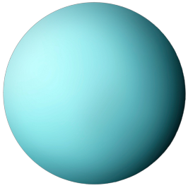

Planetas do Sistema Solar
 Sol
Sol


- 


Tabela Comparativa
| Planeta | Diâmetro (km) | Distância do Sol (km) | Temperatura Média (°C) | Gravidade (Terra=1) |
|---|---|---|---|---|
| Mercúrio | 4.879 | 57.910.000 | 167 | 0.38 |
| Vênus | 12.104 | 108.200.000 | 464 | 0.91 |
| Terra | 12.742 | 149.600.000 | 15 | 1.00 |
| Marte | 6.779 | 227.900.000 | -65 | 0.38 |
| Júpiter | 139.820 | 778.300.000 | -110 | 2.34 |
| saturnoo | 116.460 | 1.427.000.000 | -140 | 1.06 |
| Urano | 50.724 | 2.871.000.000 | -195 | 0.92 |
| Netuno | 49.244 | 4.498.000.000 | -200 | 1.19 |